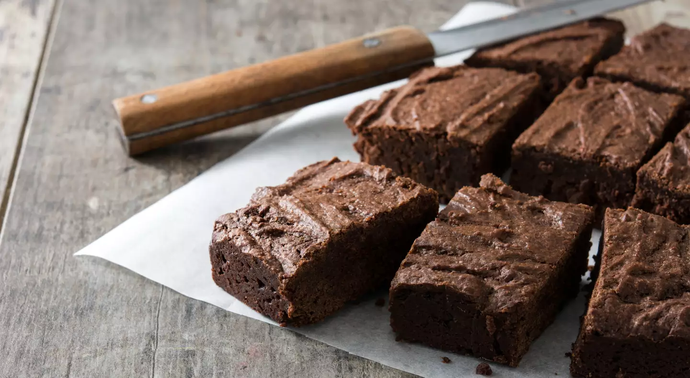

Como fazer bolo de chocolate sem farinha
Receita simples e prática para garantir o seu lanche da tarde
Por: Redação ● 16/04/2020 ● Tempo de leitura: 2 mins
ingredientes
- 6 ovos;
- 8 colheres (sopa) de cacau em pó 50%;
- 100g de manteiga derretida;
- 1 pitada de sal;
- 2 colheres de sopa de mel;
- 1 pacote de coco ralado seco ou 100g;
- 1 colher (sopa) cheia de fermento em pó.